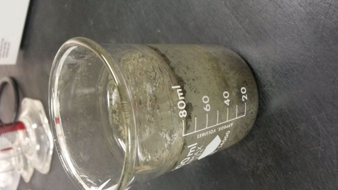
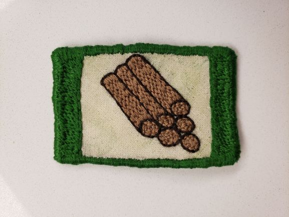

About Me
I am a
physicist and amateur software developer from St. Cloud,
Minnesota. I am also interested in data, education, and the
environment.
I plan to attend the Software Guild in September 2020 to advance
my programming skills and start my career as a developer or engineer.
Past Experiences

I graduated from Hamline University in 2019 with a Bachelor's in
Physics and a minor in Mathematics. I interned at Image Sensing
Systems where I worked on algorithms and data analysis in Python.
I am also self-taught in JavaScript and Java.
From 2019-2020, I volunteered through AmeriCorps at Great Oaks
Charter School in Wilmington, Delaware. I tutored 12 high school
freshmen in small groups for mastery of Algebra 1. I also focused
on teaching organizational and study skills to students and led
student reflections on their performance.
Hobbies

I enjoy fiber arts, particularly knitting and embroidery. I am
currently working on learning to knit socks. I also enjoy
embroidering small patches.
I also enjoy walking, bicycling, and exploring local, state, and
national parks.